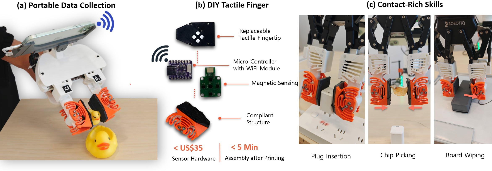
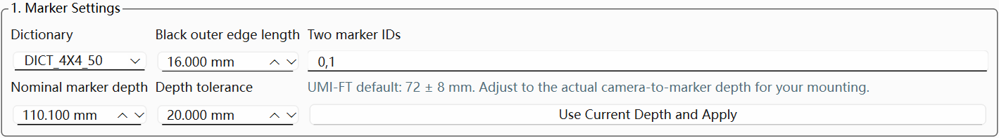
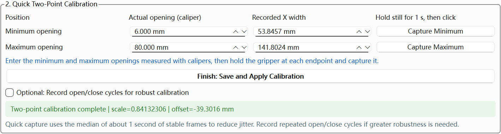

PrintTac Hardware Guide
Build a tactile UMI gripper.
Assemble modular tactile fingertips with a printed PETG flexure and a magnetometer array. Connect them to an iPhone to record touch, vision, and pose in a portable demonstration system.

This guide combines public PrintTac materials with the current PrintTac Capture implementation. The available materials do not include a complete CAD package, magnet dimensions, fastener specifications, print profiles, or board firmware. These items are marked as pending below. Obtain the matching design files before purchasing parts, printing, or flashing boards.
Flexure · magnets · contact tip
Sensor board · ESP32 · Wi-Fi
Touch · aperture · pose
BILL OF MATERIALS
Parts & tools
The quantities below describe a two-finger handheld gripper with independent sensing on each finger. Use the released CAD and BOM to determine magnet and fastener quantities.
Links below identify specific products from manufacturers or distributors. Candidate parts still need validation with the matching PrintTac CAD and wiring. Check the selected variant, shipping region, and availability before ordering.
| Component | Qty. | Purpose / requirement |
|---|---|---|
| eFlesh Magnetometer BoardFive-chip sensing coreBuy from WowRobo ↗ | 2 | Five three-axis magnetic readings per finger. Use the matching sensor-board wiring and firmware. |
| Adafruit QT Py ESP32-S3 with STEMMA QTWireless controller · Product ID 5426Buy from Adafruit ↗ | 2 | 8 MB Flash, no PSRAM. Reads magnetic data and sends it to the phone. Use the matching sensor-board wiring and firmware. |
| Sensor-to-controller wiringCandidate: 100 mm STEMMA QT cable ↗Adafruit 2003 silicone wire · 30 AWG, 2 m, black ↗ | 2 sets | One connection per finger. The QT Py connector uses 4-pin JST-SH at 1.0 mm pitch. Confirm the eFlesh connector and pinout before selecting a cable or making a harness. Adafruit 2003 is unconnectorized, stranded-core silicone wire for a custom harness; choose wire gauge for the actual load. |
| PETG compliant flexurePrinted structureCandidate: COMTREE Bamboo PETG Basic · white, 1.75 mm, 1 kg · Amazon ↗ | 2 | Use identical CAD, material, and print settings for both fingers. Candidate filament: 1.75 mm, 1 kg. Validate its mechanical response and print profile. |
| PLA contact tipReplaceable interfaceCandidate: OVERTURE High Speed PLA · official store ↗ | 2 | Select a flat wiping pad or a pointed grasping tip for your task. Candidate filament: 1.75 mm, 1 kg. Validate the material and print profile. |
| Cylindrical neodymium magnetsPurchase link pending magnet specifications | Per CAD | Seated behind the rigid contact plate. Confirm diameter, thickness, grade, magnetization direction, and quantity from the design. |
| Screws & nutsCandidate: DFRobot FIT0665 · M2, 320-piece kit ↗Candidate: DFRobot FIT0224 · M3/M4 mounting kit ↗ | Per CAD | Match thread size, length, head type, material, and quantity to each CAD joint before buying. FIT0665 includes M2 screws, nuts, and standoffs; its page does not specify screw length. FIT0224 includes M3 Phillips truss screws in 6, 8, 10, and 12 mm lengths, plus other hardware. These are candidate assortments; check magnetic interference near the sensing stack. |
| Heat-set threaded insertsCandidate: ruthex M2/M3/M4/M5 brass inserts · 270 pieces ↗ | If required | Use only where the PrintTac CAD specifies inserts. Match thread size, outer diameter, and length to the printed pockets; the linked kit contains multiple sizes. |
| Grip tape3M TB641 · black, 1 in × 15 ft · DigiKey ↗ | Optional | Optional grip surface. Check stock and supplier lead time for the linked roll. Applying it to a contact tip changes friction and contact geometry; recheck the task-specific behavior after fitting it. |
| Printed gripper chassis & phone mount | 1 set | Use the matching PrintTac design to hold both fingers and the phone. Check mounting clearances and cable routing throughout the opening range. |
| ARKit-compatible iPhone | 1 | The current ultrawide ArUco path requires a compatible iPhone Pro and iOS version. Verify on the actual device. |
3D print files
These .3mf files are the printable parts for this build. Open each file in a slicer. Print both flexures with the same material and settings.
| Print file | Qty. | Part |
|---|---|---|
| Contact faceface.3mf | 1 | Printed contact face. |
| iPhone mountiphone1.3mf | 1 | Phone mount. Model name: UMIFT iPhone mount. |
| Left UMI armumi_arm_left.3mf | 1 | Left arm of the gripper chassis. |
| Right UMI armumi_arm_right.3mf | 1 | Right arm of the gripper chassis. |
| Compliant flexurespring.3mf | 1 | Printed flexure. Use PETG, and keep the paired flexure on the same print profile. |
| Compliant flexurespring1.3mf | 1 | Paired flexure for the other finger. Use the same PETG and print profile as spring.3mf. |
| Robotiq part 1robotiq1.3mf | 1 | Printed Robotiq-side part. |
| Robotiq part 2robotiq2.3mf | 1 | Printed Robotiq-side part. |
FINGERTIP ASSEMBLY
Assemble the tactile fingertips
Confirm the magnet layout
Follow the matching CAD for pocket positions, magnet count, and polarity. Keep both fingers consistent with the reference sensing configuration. Confirm polarity before permanently securing the magnets.
Mount the sensor board and flexure
Keep the magnetometer board fixed to the base while the magnets move with the contact plate. Check that tightening does not bend the board or constrain the flexure. Route cables clear of moving parts.
Attach the replaceable contact tip
Use the fasteners specified by the design. Preserve the internal magnetic sensing stack when replacing a tip. Check the unloaded signal and elastic return after assembly and each replacement.
Validate one finger, then assemble the pair
Gently touch the tip and inspect all five chips. Signals should respond to contact and return to a stable unloaded baseline. Once both fingers pass, mount them on the gripper and secure the phone and cables.
GRIPPER CALIBRATION
Calibrate the gripper aperture
In ArUco Gripper, use two measured jaw openings to calibrate the width.
Open PrintTac Capture
Complete the desktop setup, then run this from the repository root. Replace PHONE_IP with your iPhone's IP address.
.\.venv\Scripts\python.exe printtac.py monitor --phone-ip PHONE_IPOn macOS, replace .\.venv\Scripts\python.exe with ./.venv/bin/python.
Check markers and depth
Mount one marker on each jaw at similar height and depth, with camera X along the opening direction. Confirm both are visible in Live Monitor → 0.5× Ultra-wide (ArUco). In ArUco Gripper, check the settings below, click Use Current Depth and Apply, and wait for Measuring each frame.

Match the printed markers; update the depth for your mounting. Click to enlarge. Measure and capture both endpoints
Measure the minimum and maximum gaps between the inner contact surfaces with calipers. Enter them in Actual opening (caliper), in mm. At the minimum opening, hold still for one second and click Capture Minimum; repeat at the maximum with Capture Maximum. Keep both markers visible.

Example values shown—enter your own measured gaps. Click to enlarge. Save and check
Click Finish: Save and Apply Calibration. Compare Calibrated opening with caliper measurements at a few intermediate positions. Recalibrate after moving the markers, remounting the phone, or changing the contact tips.
Optional: Use repeated open/close cycles
Enable Optional: Record open/close cycles for robust calibration and click Start Recording. Move between the measured endpoints for at least Minimum complete cycles (default: 5). Click Finish and Calculate, then Save and Apply.